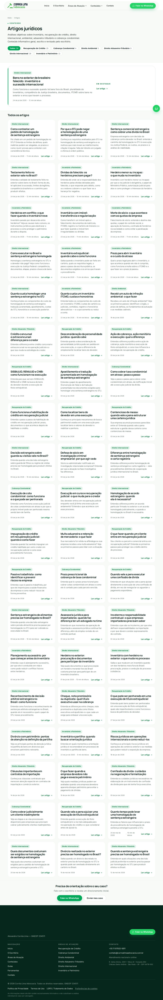
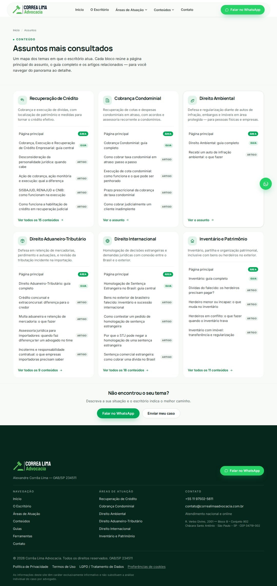
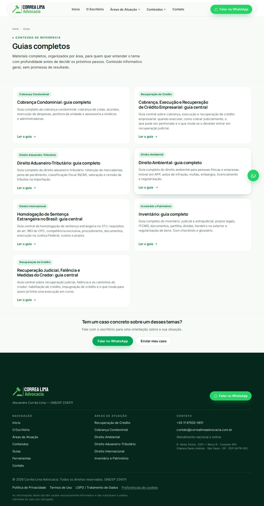
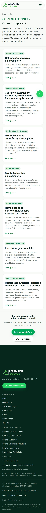
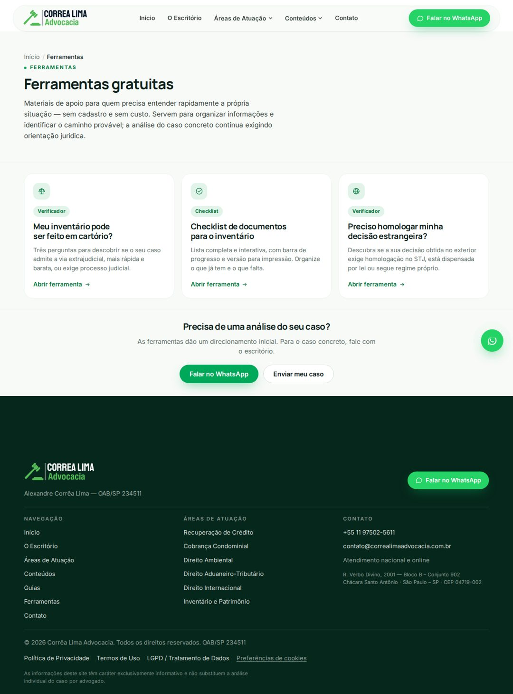
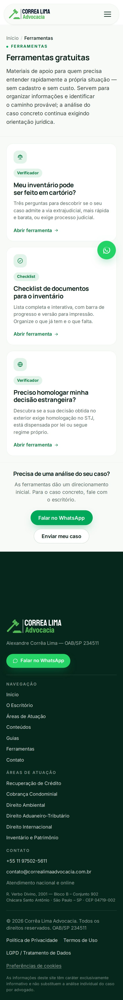
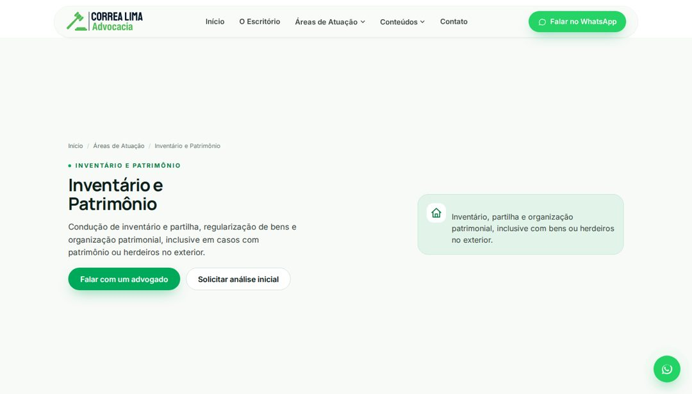
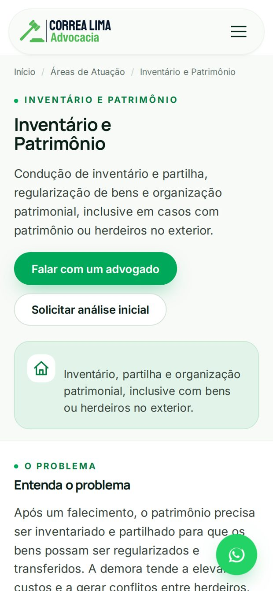

Corrêa Lima Advocacia · duas correções visuais/UX, sem alterar conteúdo jurídico, URLs, slugs, SEO, schema, Analytics ou a Home.
/blog/ e /assuntos/ tiveram apenas o corpo reconstruído; o <head> (title, description, canonical) e o JSON-LD continuam vindo exatamente da mesma fonte (getPage). Nenhuma URL foi criada ou alterada.

Um bloco de HTML exportado, injetado via set:html: artigos como sequência de links, categorias coladas, data e tempo de leitura sem espaçamento, muito espaço vazio à direita.
A página não era gerada a partir dos dados — era um dump estático sem grid, cards nem hierarquia.
blog (58 artigos).aria-pressed; sem JS, todos aparecem. Verificado: 57 → 11 → 57.ContentCard, content-index.css (hero, chips, grid, featured), Container.

Antes: títulos e links soltos em colunas sem coerência, assuntos misturados. Agora cada um dos seis núcleos é um card independente (grid 3/2/1), com cabeçalho (ícone + nome), descrição e uma lista organizada de links.
Trocamos o HTML exportado por um grid centralizado no container padrão do site (mesma largura das Áreas de Atuação), com cards de altura equilibrada — acabou o conteúdo concentrado à esquerda e o vazio à direita.
TopicClusterCard, content-index.css (cluster-grid/cluster-card), dados de nucleos.ts + coleções blog/guias.


Já estava boa; foi alinhada ao mesmo sistema visual (hero, grid e cards compartilhados) para ficar consistente com Blog e Assuntos, e ganhou um CTA final padronizado.
Head, canonical e JSON-LD (BreadcrumbList + CollectionPage) intactos; a listagem continua vindo de getCollection('guias').


As três ferramentas existentes (verificador de via do inventário, checklist de documentos, verificador de homologação) foram organizadas em cards com ícone, rótulo, título, descrição e botão “Abrir ferramenta”, no mesmo padrão visual das demais páginas. Nenhuma ferramenta inexistente foi criada.
Dropdown reorganizado para Artigos · Assuntos · Guias · Ferramentas (antes faltava “Ferramentas”, que só existia no rodapé). Todos apontam para URLs já existentes — nenhuma rota nova.
<button> com aria-pressed; o filtro é progressivo (funciona sem JS mostrando tudo).

De forma compartilhada pelos dois componentes-base das Áreas: PillarPage (.p-hero) e SubPage (.s-hero), via a folha src/styles/areas-hero.css — não foi corrigido página por página.
A primeira seção passou a ter min-height: clamp(30rem, calc(100dvh − var(--header-height)), 60rem) (com svh de reforço), conteúdo centrado verticalmente. Assim o hero preenche a altura útil (viewport menos o cabeçalho fixo de 4,75 rem) e a próxima seção só aparece após rolagem.
src/styles/content-index.css — sistema visual das páginas de Conteúdos
src/styles/areas-hero.css — primeira dobra compartilhada das Áreas
src/components/content/ContentCard.astro — card de artigo/guia
src/components/content/TopicClusterCard.astro — card de cluster (Assuntos)
src/pages/blog/index.astro — hero + chips + destaque + grid (da coleção)
src/pages/assuntos/index.astro — grid de cards de cluster
src/pages/guias/index.astro — alinhado ao sistema compartilhado
src/pages/ferramentas/index.astro — cards no padrão compartilhado
src/lib/navigation.ts — menu Conteúdos + Ferramentas
src/layouts/BaseLayout.astro — imports das novas folhas
Container, Breadcrumb, Icon, JsonLd, tokens do site, nucleos.ts, coleções blog/guias.
Conteúdo jurídico, artigos e guias individuais, URLs, slugs, títulos SEO, meta, canonical, sitemap, JSON-LD, Analytics/Consent/IndexNow, formulário, WhatsApp, logo, cores e a Home.
<h1> por página; hierarquia de headings correta; listas em ul/li; botões como <button> e links como <a>; foco visível; cards clicáveis sem depender de sublinhado.